2022 — 2026
B.Tech — Electronics & Communication Engineering
Government Engineering College Vaishali · Bihar Engineering University
CGPA 7.43 · 70%I'm Abhishek Kumar — an Electronics & Communication Engineer, ATL Robotics Trainer and technology learner who enjoys turning circuits, code and real-world problems into meaningful solutions.
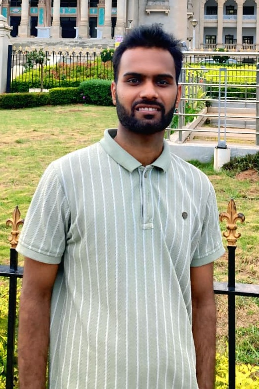
I am an Electronics & Communication Engineering graduate with practical exposure to digital electronics, Verilog HDL, Arduino, sensors, embedded systems and robotics.
Currently working as an ATL Robotics Trainer under the PM SHRI Program at Jawahar Navodaya Vidyalaya, Siwan, where I train students in Arduino, sensors, robotics, automation and activity-based technology learning.
Learning by building is the bridge between a concept on paper and a system that actually works.
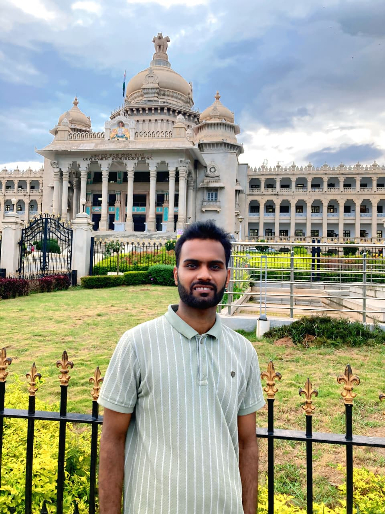
Government Engineering College Vaishali · Bihar Engineering University
CGPA 7.43 · 70%IGNOU
67%Government Polytechnic Chapra · SBTE Patna
CGPA 8.16 · 74%A.S.K.M. Inter College, Sonouli, Saran · BSEB Patna
52%Jawahar Navodaya Vidyalaya (JNV), Siwan, Bihar
Namashkaram Tech Skills Pvt. Ltd.
Rail Wheel Plant (RWP), Bela
Studied railway communication and signaling, safe train movement and railway safety infrastructure.
Each skill family has its own visual space — matching the kind of work and projects behind it.
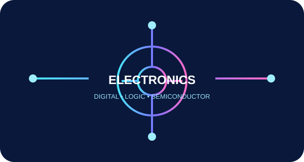
01Semiconductor Fundamentals · Basic Electronic Components · Digital Electronics · Logic Gates
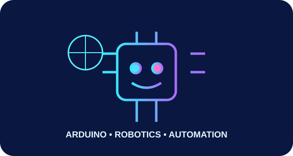
02Arduino UNO · Arduino IDE · Arduino Programming · Sensor Interfacing · Basic Robotics · IoT
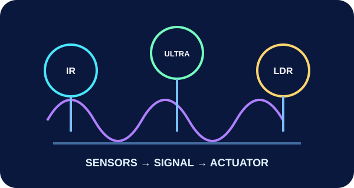
03IR · Ultrasonic · LDR · Temperature · Soil Moisture · Servo · DC Motor · Relay · LED · Buzzer
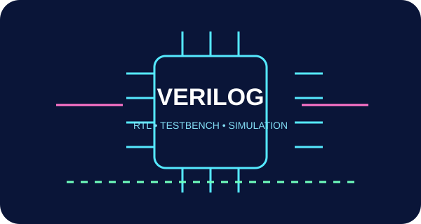
04Verilog HDL · RTL Fundamentals · Combinational & Sequential Circuits · Dual-Port RAM · Testbench · Simulation
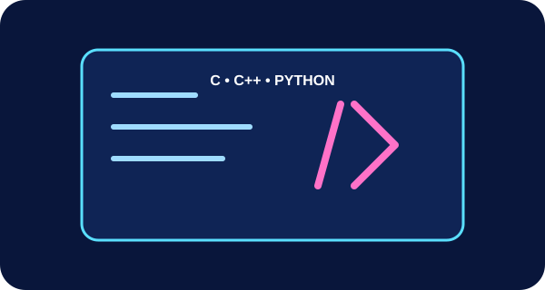
05C · C++ · Basic Python · HTML · CSS
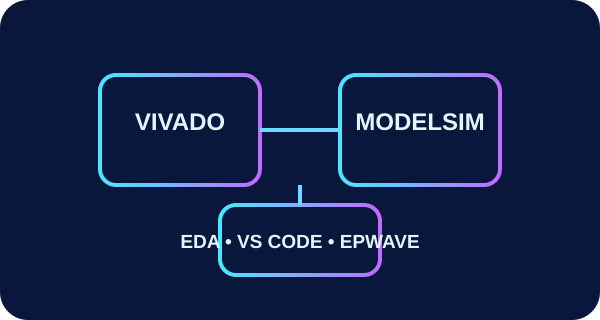
06Vivado · ModelSim · EDA Playground · EPWave · VS Code · Windows · Basic Linux · MS Office
Designed Dual Port RAM with two independent ports, read/write operations and conflict detection for simultaneous access to the same memory location. Created a Verilog testbench and verified the design through simulation and waveforms.
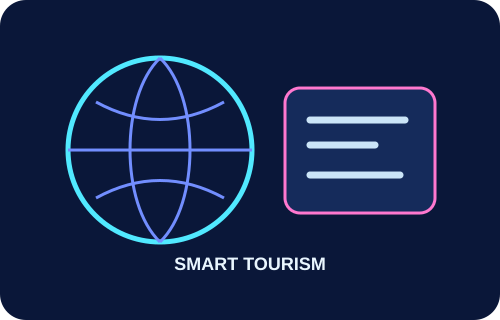
Web-based tourism management system for booking, destinations, users and travel information.
HTML · CSS · JavaScript · PHP · MySQL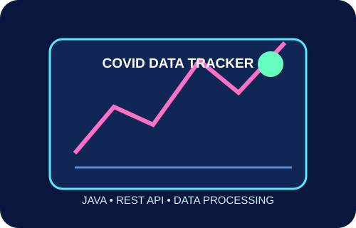
Java desktop application using public APIs for COVID-19 statistics and interactive country/state-wise data.
JAVA · XML · REST API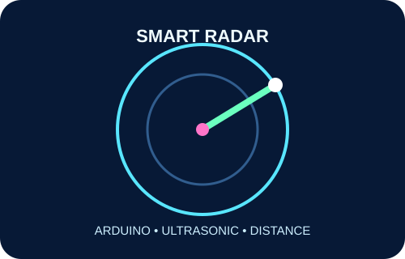
Ultrasonic sensor based object detection and distance measurement with Arduino visualization.
ARDUINO · ULTRASONIC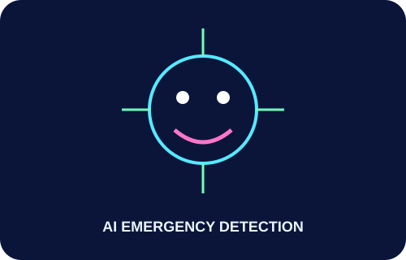
Concept for emergency detection using image, gesture and voice recognition with automated alerts.
AI · AUTOMATION
For electronics, robotics training, embedded projects, technical collaboration or professional opportunities.